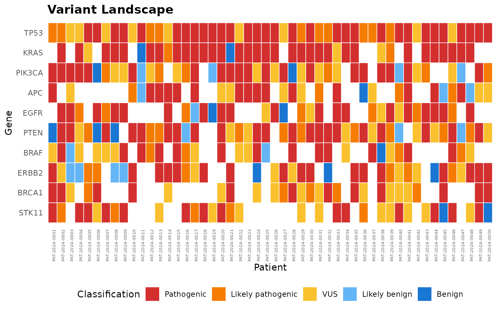
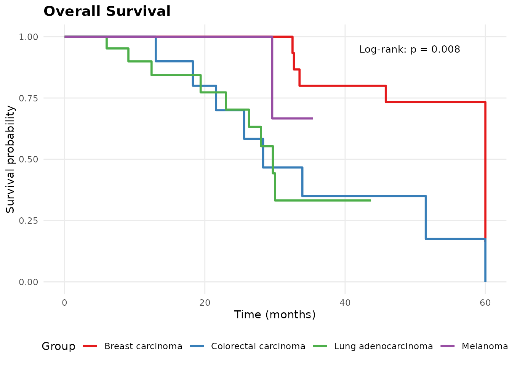

Installation
Install molpathR from GitHub:
# install.packages("remotes")
remotes::install_github("cttir/molpathR")Quick start
Load the package and create an example database:
library(molpathR)
db <- mp_example_db(n_patients = 50, seed = 42)
db
#>
#> ── molpath_db ──────────────────────────────────────────────────────────────────
#> ℹ patients: 50 records x 5 columns
#> ℹ samples: 116 records x 5 columns
#> ℹ variants: 2151 records x 10 columns
#> ℹ reports: 116 records x 5 columns
#> ℹ clinical: 195 records x 5 columns
#> ℹ survival: 50 records x 5 columns
#> ℹ Sample date range: 2021-04-01 to 2025-06-26
#> ℹ Overall completeness: "93.7%"
#> ℹ Created: "2026-08-11 14:39:28"
#> ℹ Source files: 0Explore the data
Get a cohort summary:
mp_summary(db)
#>
#> ── molpathR Database Summary ───────────────────────────────────────────────────
#>
#> ── Record counts ──
#>
#> • Patients: 50
#> • Samples: 116
#> • Variants: 2151
#> • Reports: 116
#> • Clinical: 195
#>
#> ── Diagnoses ──
#>
#> • Breast carcinoma: 15
#> • Colorectal carcinoma: 10
#> • Lung adenocarcinoma: 21
#> • Melanoma: 4
#>
#> ── Top mutated genes ──
#>
#> • TP53: 272
#> • KRAS: 241
#> • PIK3CA: 173
#> • APC: 138
#> • EGFR: 138
#> • PTEN: 122
#> • BRAF: 119
#> • ERBB2: 97
#> • BRCA1: 86
#> • STK11: 85
#>
#> ── Completeness ──
#>
#> • patients_with_samples: 100%
#> • patients_with_variants: 100%
#> • patients_with_survival: 100%
#> • patients_with_clinical: 100%Query patients
# Find melanoma patients over 60
melanoma <- mp_query_patients(db, diagnosis == "Melanoma", age > 60)
head(melanoma)
#> # A tibble: 3 × 5
#> patient_id age sex diagnosis diagnosis_date
#> <chr> <int> <chr> <chr> <date>
#> 1 PAT-2024-0011 77 F Melanoma 2023-06-25
#> 2 PAT-2024-0031 67 M Melanoma 2021-07-20
#> 3 PAT-2024-0032 70 F Melanoma 2024-11-25Query variants
# Pathogenic TP53 variants with VAF > 10%
tp53 <- mp_query_variants(db, genes = "TP53", classification = "Pathogenic", min_vaf = 0.1)
head(tp53)
#> # A tibble: 6 × 10
#> sample_id gene variant variant_type classification vaf chromosome position
#> <chr> <chr> <chr> <chr> <chr> <dbl> <chr> <int>
#> 1 SAM-2021-… TP53 TP53 d… CNV Pathogenic 0.420 17 1.91e7
#> 2 SAM-2021-… TP53 TP53-U… Fusion Pathogenic 0.464 17 7.83e7
#> 3 SAM-2022-… TP53 TP53-U… Fusion Pathogenic 0.322 17 1.89e8
#> 4 SAM-2021-… TP53 TP53 l… CNV Pathogenic 0.214 17 5.81e7
#> 5 SAM-2022-… TP53 p.R282W SNV Pathogenic 0.250 17 5.91e7
#> 6 SAM-2023-… TP53 p.R248W SNV Pathogenic 0.213 17 1.14e8
#> # ℹ 2 more variables: ref_allele <chr>, alt_allele <chr>Visualize
mp_plot_variant_landscape(db, top_n = 10)
mp_plot_survival(db, group_by = "diagnosis", type = "os")
Launch the Shiny app
mp_run_app(db)Use of LLM tools
Portions of this package were prepared with assistance from large
language model tooling for narrowly defined, non-authorial tasks:
copyediting, prose smoothing, Markdown/LaTeX formatting, scaffolding of
boilerplate files (CI configs, build scripts), code refactoring. The
tools used were Chat AI,
the LLM service of KISSKI (GWDG), and a self-hosted Mistral
Small (24B, Apache-2.0) run locally via Ollama and the ollamar R
package — local inference only, with no data sent to third parties for
the self-hosted model.
All scientific claims, methodological choices, analyses, interpretations, and conclusions are the author’s own. No LLM-generated text was incorporated without review and revision, and every reference was verified against its DOI, arXiv ID, or ISBN.